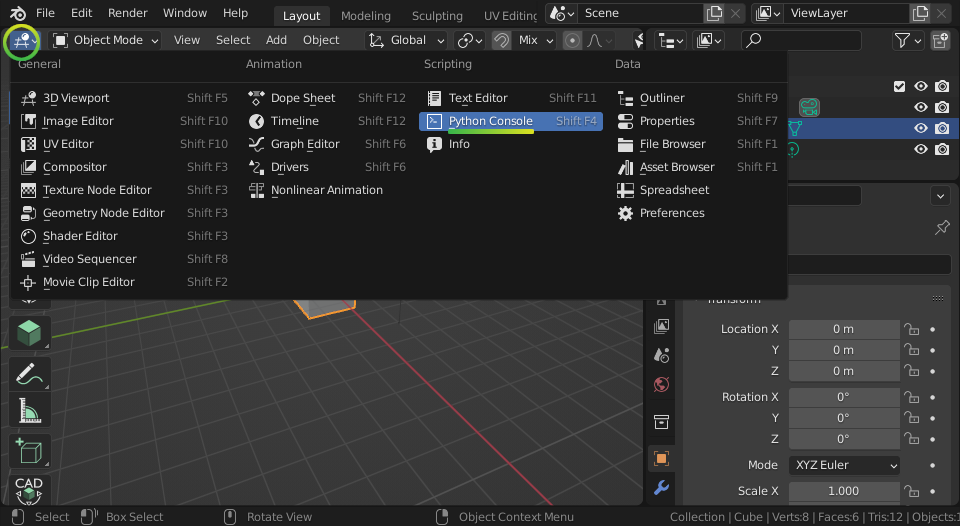
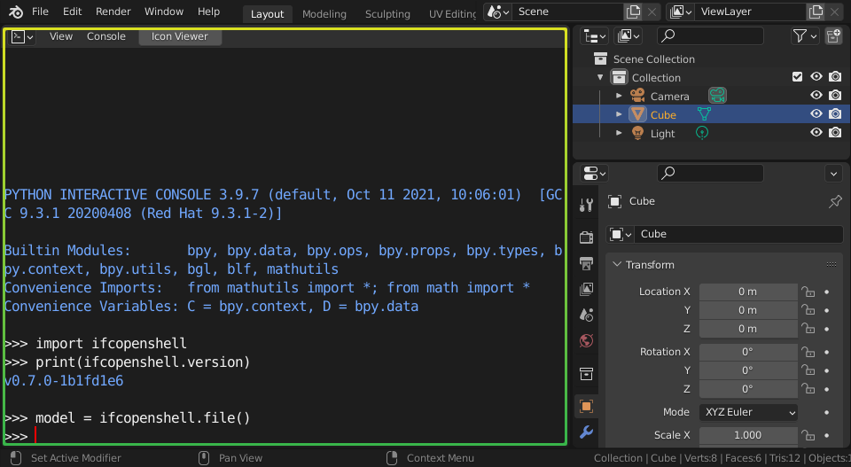
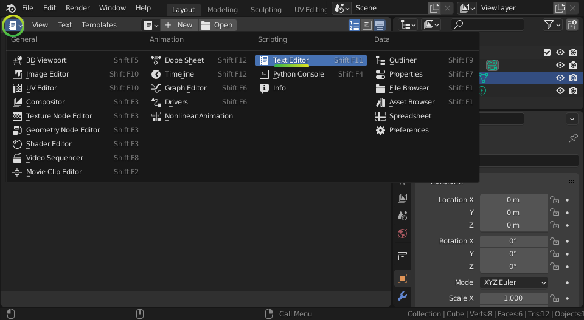

Installation¶
There are different methods of installation, depending on your situation. If you aren’t sure which to choose, if you’re a programmer, go for PyPI if you use Pip, otherwise go for the ZIP packages. If you aren’t a programmer, go for the BlenderBIM Add-on.
PyPI is recommended for developers using Pip.
ZIP packages is recommended for users doing a manual installation.
Conda is recommended for developers using Anaconda.
Docker is recommended for developers using Docker.
AWS Lambda is recommended for developers using AWS Lambda functions.
Google Colab is recommended for developers using Google Colab.
Web Assembly is recommended for developers experimenting with IfcOpenShell on the web.
Using the BlenderBIM Add-on is recommended for non-developers wanting a graphical interface.
From source with precompiled binaries is recommended for developers actively working with the Python code.
Compiling from source is recommended for developers actively working with the C++ core.
PyPI¶
pip install ifcopenshell
ZIP packages¶
Choose which version to download based on your operating system, Python version, and computer architecture.
Linux 64bit
Windows 32bit
Windows 64bit
MacOS Intel 64bit
MacOS Silicon 64bit
Python 3.9
Python 3.10
Python 3.11
Python 3.12
Unzip the downloaded file and copy the
ifcopenshelldirectory into your Python path. If you’re not sure where your Python path is, run the following code in Python:import sys print(sys.path)
This will give you a list of possible directories that you can install the IfcOpenShell module into. Most commonly, you will want to copy the
ifcopenshelldirectory into one of these calledsite-packages.Test importing the module in a Python session or script to make sure it works.
import ifcopenshell print(ifcopenshell.version) model = ifcopenshell.file()
Conda¶
# To install the latest daily build of IfcOpenShell (recommended)
conda install -c ifcopenshell -c conda-forge ifcopenshell
# Alteratively, to install an older, stable version
conda install -c conda-forge ifcopenshell
# If you want to install additional packages that rely on occt, you should install them at the same time into a fresh environment
conda create -n testenv -c conda-forge ifcopenshell pythonocc-core
Note
Installing IfcOpenShell from Conda will also install IfcConvert. Conda also supports Linux AArch64.
Note
If you plan on using any other packages using occt (OpenCascade) you will need to ensure that the occt version installed by ifcopenshell is compatible with the other packages. A common error when using two packages compiled with different occt versions are ImportError: cannot import name ‘V3d’ from ‘OCC’. To avoid this, you should install both packages at the same time and let conda resolve the common occt version. Here is an example where ifcopenshell and pythonocc-core are installed in the same environment testenv conda create -n testenv -c conda-forge ifcopenshell pythonocc-core
Warning
Conda builds are not yet available for Mac ARM devices (M1 chip). Instead, please follow the instructions for the Pre-built packages or PyPI sections above.
Docker¶
docker run -it aecgeeks/ifcopenshell python3 -c 'import ifcopenshell; print(ifcopenshell.version)'
Note
Installing IfcOpenShell from Docker will also install IfcConvert.
AWS Lambda¶
This guide provides a Dockerfile and sample code to help you run an AWS Lambda function written in Python and using the IfcOpenShell library.
This is only a superficial guide, in order to make this work for your usecase you will need a good understanding of other AWS services like SQS, S3, API Gateways, etc.
See also
For more information on building lambda containers refer to the AWS guide on working with Lambda container images
Clone or download the IfcOpenShell repository.
Replace the sample Lambda function code in the example_handler directory with your own code.
Update the import path in the Dockerfile’s CMD instruction to match your Lambda function’s handler function.
Edit the requirements.txt file and add any additional dependencies required by your Lambda function.
Build the Docker image:
docker build -t lambda-ifcopenshell .
Run the Docker container:
docker run lambda-ifcopenshell
Test lambda locally by following the AWS guide on testing Lambda container images locally.
Deploy to lambda. This is beyond the scope of this guide. Please refer to the AWS documentation. Some tools that could be useful are AWS CloudFormaton, AWS CDK, pulumi or terraform.
Google Colab¶
The Google Colab environment is based on the distribution from PyPI, but lets you run it in an online notebook without any local setup required. This is great for educators and those wanting to try it out without control on their local system.
Click here to launch a simple notebook.
Web Assembly¶
IfcOpenShell is available as technology preview to be run using WASM. This allows you to run IfcOpenShell in a browser using pyodide. This implementation is incredibly heavy and will incur a long load time, but once loaded, will give you full access to the entire IfcOpenShell API.
Click here to learn how to use WASM.
Using the BlenderBIM Add-on¶
The BlenderBIM Add-on is a Blender based graphical interface to IfcOpenShell. Other than providing a graphical IFC authoring platform, it also comes with IfcOpenShell, its utilities, and a Python shell built-in. This means you don’t need to install Python first, and you also can compare your IfcOpenShell scripting to what you see with a visual model viewer, or use a graphical interface to access the IfcOpenShell utilities.
The BlenderBIM Add-on is available either as a stable build or a daily build.
Install the BlenderBIM Add-on by following the BlenderBIM Add-on installation documentation.
Launch Blender. On the top left of the Viewport panel, click the Editor Type icon to change the viewport into a Python Console.
Make sure you can import IfcOpenShell successfully with the following script.

Tip
Before changing the Editor Type to a Python Console, you can click on
the View > Area > Vertical Split menu which will divide your viewport.
This allows you to write scripts next to the 3D view of a model.
Blender also comes with a text editor so you can write longer scripts. Instead of choosing the Python Console, choose the Text Editor.
You can now create a new text file for your script by clicking Text > New,
and run your script using the Text > Run Script menu or by clicking on the
Play Icon.

See also
You may be interested in learning how to graphically explore an IFC model in Blender. This can help when learning how to write scripts as you can double check the results of your scripts with what you see in the graphical interface. Read more.
From source with precompiled binaries¶
Clone or download the IfcOpenShell repository.
Place
src/ifcopenshell-python/ifcopenshell/in your Python path.Download the relevant pre-built package, and copy over the two files with
ifcopenshell_wrapperin their filename tosrc/ifcopenshell-python/ifcopenshell/.
Compiling from source¶
Advanced developers may want to compile IfcOpenShell. Refer to the IfcOpenShell installation guide for instructions.
Legacy versions¶
It is not recommended to use older versions of IfcOpenShell, but for historic reasons you may find them here: